sam = read.csv("https://qtm285-1.github.io/assets/data/nba_sample_1.csv")
pop = read.csv("https://qtm285-1.github.io/assets/data/nba_population.csv")
indicator = function(W,L,...) { W / (W+L) > 1/2 }
library(purrr)
Y = sam |> pmap_vec(indicator)
y = pop |> pmap_vec(indicator)
n = length(Y)
m = length(y)7 Homework: Calibration with Binary Outcomes
$$ \newcommand{X}{} \newcommand{Y}{}
$$
Summary
This week, we’re going to get into the details of real-world calibration. The kind that doesn’t require that you know your estimator’s actual sampling distribution. We’ll start simple. In Exercise 7.1 and Exercise 7.2, you’ll implement a calibrated interval estimator for a population proportion and calculate its actual coverage probability. Then, after a detour on how exactly we go from an estimate of the sampling distribution to an interval width (Exercise 7.3), we’ll really get into how using an estimate affects the calibration of our interval estimates.
Here we take advantage of a very nice feature of the sampling distributions we get when we’re estimating a proportion \(\theta\). after sampling with or without replacement. They’re determined by our estimation target \(\theta\), i.e. it’s Binomial or Hypergeometric with success probability \(\theta\). As a result, once we have a point estimate \(\hat\theta\), we’ve essentially determined our estimate of the sampling distribution estimate, i.e., it’s Binomial or Hypergeometric with success probability \(\hat\theta\). This means we can think of properties of our interval, e.g. its width or its upper and lower bounds, as functions of \(\hat\theta\). And we can visualize these functions. That’s what Figure 7.2 and Figure 7.3 are about, and you’ll be using them in Exercise 7.47.6 to understand a phenomeon we saw on the last slide of Lecture 3: around some point estimates, we get a wider-than-perfectly-calibrated interval, which effectively helps it cover the estimation target, and around others we get a narrower-than-perfectly-calibrated interval, which does the opposite. By looking at the width of the sampling distribution as a function of \(\theta\), we can understand where and why this happens—no programming required.
We’ll conclude by using our visualizations to calculate the actual coverage probability of our imperfectly-calibrated interval estimates. First, in Exercise 7.7, we’ll do it at a single value of \(\theta\)—effectively repeating Exercise 7.2 using our understanding of what these intervals look like rather than brute-force simulation. Then, in Exercise 7.8, we’ll repeat the process for a range of \(\theta\) values, allowing us to plot the actual coverage probability of our real-world interval estimates as a function of \(\theta\).
This is all for the case of sampling with replacement. Some extra credit exercises, Exercise 7.107.12, repeat this process for the case of sampling without replacement.
The Point
For a lot of estimators, calibration is a bit more complicated than it is here. For example, that the width of the sampling distribution of a difference of two proportions depends on more than that difference—it depends on the two proportions themselves. We lose our one-to-one mapping between the point estimate and the sampling distribution, so there’s more to the question of how estimating this sampling distribution affects calibration. My hope is that, having some shared visual intuition for how calibration works in this simple case, we’ll have an easier time talking about how it works more generally.
The Data
We’ll be using the NBA data from last week’s homework. But to stay in familiar territory, we’ll need a binary outcome, so we’ll use a frequency. In particular, we’ll look at the frequency that a player’s team wins in over half of the games they play in.
You may have caught on that ‘your sample’ from last week’s homework probably isn’t sampled with replacement from the population after all. So we’ll work with ‘my sample’. Here’s some code you can run to get the data set up. Just like in class, we’ll use (little) y for the population and (big) Y for the sample.1
pink = '#ef476f' # rgb(239,71,111)
teal = '#118ab2' # rgb(17,138,178)Warm Up
To get started, we’ll redo a few exercises from last week with a few modifications. First, we’ll use this new binary outcome instead of points. And second, we’ll calibrate our intervals using estimates of our sampling distribution rather than the actual sampling distribution.
To remind you of the notation, here’s how we write out our estimation target and estimator again. \[ \begin{aligned} \underset{\text{estimation target}}{\theta} &= \frac{1}{m}\sum_{j=1}^m y_j \\ \underset{\text{estimate}}{\hat\theta} &= \frac{1}{n}\sum_{i=1}^n Y_i \end{aligned} \]
The first one is a version of last week’s Exercise 3.
Solution
Locked (Week 2)
The second one is a version of last week’s Exercise 4.
Solution
Locked (Week 2)
Improving Speed and Precision at The Same Time
So far, to calculate our interval widths, we’ve used a ‘dot counting’ method. We’ve sampled 10,000 times from our (estimated) sampling distribution, then tried drawing arms of different lengths around the sampling distribution’s mean until we go one that included 9500 (95%) of those dots. You can think of it as an iterative process like this.
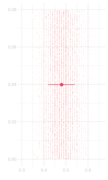
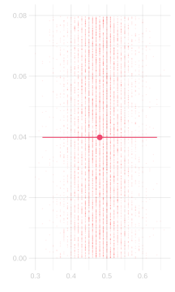
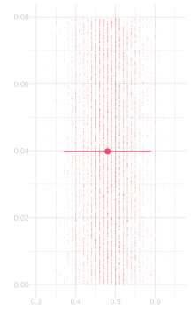
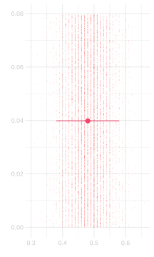
That’s really what the code is doing. What I’m leaving out is a clever way of choosing the next width to try given what’s happened so far. That’s baked into R’s built-in function uniroot, which is being used in width to find the solution to this equation.
\[ \hat f(x) = 0 \qqtext{ where } \hat f(x) = \text{the fraction of dots covered at width } x - .95 \]
What’s imprecise about this is that we’re using 10,000 dots instead of infinitely many. We don’t really want to know the fraction of 10,000 dots that we’re going to cover—we want to know the fraction of the sampling distribution that we’re going to cover. To do this, we can make a slight modification to our code. We’ll swap our dot counting function \(\hat f(x)\), which was called covg.dif in the code, with a version \(f(x)\) that actually calculates probability. Here’s the code. It’s a bit faster than the dot-counting version too.
width.binom = function(theta, n, alpha=.05) {
if(theta == 0 || theta == 1) { return(0) }
covg.dif = function(w) {
actual = pbinom(n*(theta+w/2), n, theta) -
pbinom(n*(theta-w/2)-1, n, theta)
nominal = 1-alpha
actual - nominal
}
limits = c(0, 1)
uniroot(covg.dif, interval=limits)$root
}- This uses the built-in function
pbinom, which calculates the probability that a binomial random variable is less than or equal to \(x\). To calculate the probability that it’s between two values \(a<b\), we take the probability it’s less than or equal to \(b\) and subtract the probability it’s less than \(a\): \(P(a \le X \le b) = P(X \le b) - P(X < a)\). And the probability that this average—which is some fraction of \(n\)—is less than \(a\) is, of course, the probability that it’s less than or equal to \(a-1/n\).
You can interpret the ‘dot counting’ method as doing is exactly this, except using a histogram of 10,000 draws from the sampling distribution in place of the sampling distribution itself. Remember the exercise from class last week where we thought about twins in neon-green shirts? That’s what width is doing. It’s using the histogram I’ve shaded pink instead of the sampling distribution I’ve outlined on top of it in teal.
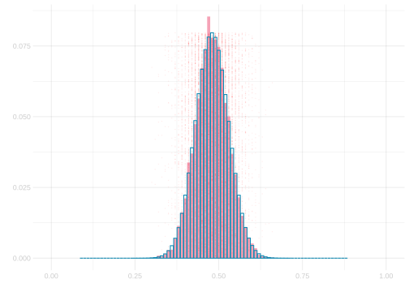
In this exercise, you’re going to compare the two approaches. You’re going to work with your estimate of the sampling distribution from Exercise 7.1 and plot two functions of interval width \(x\): the fraction of the sampling distribution that’s covered by the interval \(\hat\theta \pm x/2\) and the fraction of your 10,000 draws that is.
To reduce the amount of code you’ll have to write, I’ll give you most of what you need. All you’ll need to do is replace the NaN in probability.covered with the fraction of the sampling distribution that’s covered by the interval \(\hat\theta \pm x/2\). If you want a hint, mouse over the (1) and (2) below.
draws = rbinom(10000, n, theta.hat)/n
center = mean(draws)
dots.covered = function(x) {
mean(center - x / 2 <= draws & draws <= center + x / 2)
}
probability.covered = function(x) {
NaN
}
x = (0:n)/n
ggplot() +
geom_line(aes(x=x, y = x |> map_vec(dots.covered)), color=pink) +
geom_line(aes(x=x, y = x |> map_vec(probability.covered)), color=teal) +
scale_y_continuous(breaks = c(0,.8,.95,1), minor_breaks = NULL) +
scale_x_continuous(breaks = seq(0,1,by=.125), limits=c(0,.5)) +
labs(x='', y='') - 1
-
I’ve borrowed this code from the function
width. - 2
-
Is there something analogous you should be borrowing from
width.binom?
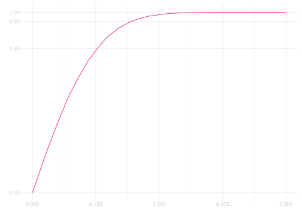
Solution
Locked (Week 2)
Visualizing Calibration
In this problem, we’re going to try to understand how calibration works by visualizing it. This turns out to be pretty straightforward when we’re talking about estimating a frequency after sampling with replacement. That’s because we know exactly what the sampling distribution of the sample frequency looks like except for one thing: we don’t know the population frequency \(\theta\). Here’s what they look like for population frequencies \(\theta\) from 10% to 90% in 10% increments at our sample size of n=100.
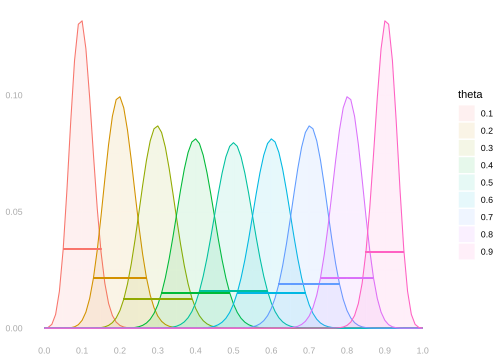
It follows that the width we should be using to calibrate our interval estimates—the width of the middle 95% of a distribution like this—is also determined by the population frequency \(\theta\). I’ve drawn it on as a ‘belt’ on the each distribution above. And we already have a function to calculate it: width.binom. And if we want to understand how these widths depend on \(\theta\), we can do the obvious thing: plot the width as a function of \(\theta\).
thetas = seq(0,1,by=.01)
widths.100 = thetas |> map_vec(function(theta) { width.binom(theta, n=n, alpha=.05) })
widths.625 = thetas |> map_vec(function(theta) { width.binom(theta, n=625, alpha=.05) })
ggplot() +
geom_line(aes(x=thetas, y=widths.100)) +
labs(x='theta', y='width')
ggplot() +
geom_line(aes(x=thetas, y=widths.625)) +
labs(x='theta', y='width')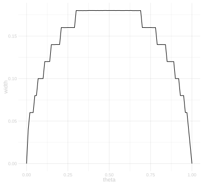
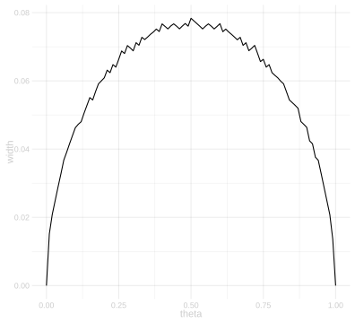
We can even plot the interval itself as a function of \(\theta\). Here’s two slightly different ways of doing it. On the left, we have a visualization that focuses on the interval’s upper and lower bounds as functions of \(\theta\). The blue line shows the upper bound and the red line shows the lower bound. On the right, we have a visualization that focuses on what the intervals themselves look like. We’re plotting the intervals themselves, laid out vertically, as a function of \(\theta\).
These are really just different ways of styling the same plot. On the left, the upper and lower bounds are styled as two lines. On the right, maybe a bit more evocatively, they’re styled as the edges of actual intervals.
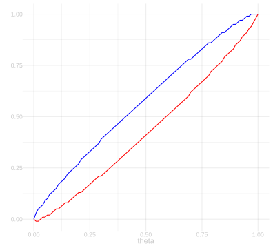
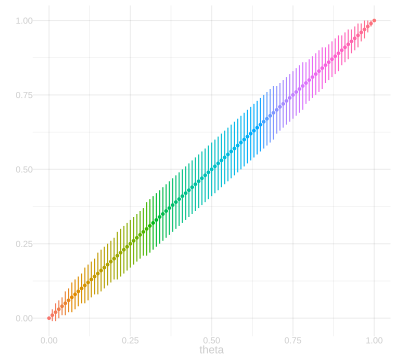
Here’s a few quick exercises to solidify your understanding of what these plots are saying.
Solution
Locked (Week 2)
Solution
Locked (Week 2)
Solution
Locked (Week 2)
Now here’s where we start to put it all together. Let’s write out an indicator that tells us whether, when our point estimate is \(x\), our interval estimate covers the population frequency \(\theta\).2
\[ 1_{\ell(\cdot) \le \theta \le u(\cdot)}(x) = \begin{cases} 1 & \text{if } \ell(x) \le \theta \le u(x) \\ 0 & \text{otherwise} \end{cases} \]
theta = mean(y)
draws = rbinom(1000, n, theta)/n
prob = dbinom(0:n, n, theta)
sampling.dist.plot = ggplot() +
geom_col(aes(x=(0:n)/n, y=prob), alpha=.2) +
geom_point(aes(x=draws, y=max(prob)*(1:1000)/1000), alpha=.1, size=.5, color='purple') +
geom_vline(xintercept=theta, color='green', alpha=.7, linewidth=1.5) +
scale_x_continuous(breaks=seq(0,1,by=.1), limits=c(.25,.75)) +
labs(x='', y='')
sampling.dist.plot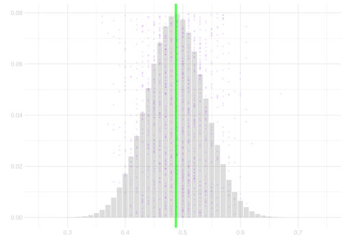
Solution
Locked (Week 2)
Our final question is a little more open-ended in how you do it. You could, for example, generalize your solution to Exercise 7.2 or translate your solution to Exercise 7.7 into code. What we’re going to do is think of the coverage probability of these interval estimates as a function—a function of the actual population frequency \(\theta\)—and plot it.
Solution
Locked (Week 2)
Extra Credit: Sampling without Replacement
Remember from class that if we sample without replacement, the sample frequency has a hypergeometric distribution, not a binomial distribution? That means that if we want to calibrate interval estimates for sampling without replacement, we need to make a very small change to the function width.binom to switch out the binomial distribution for the hypergeometric distribution. You are, of course, welcome to look up the documentation on the R function phyper and code that up yourself, but I’ve done it for you and provided the code below in case you’d rather not.
What we’re going to do here are versions of Exercise 7.7 and Exercise 7.8 for a version of our NBA survey where we’ve collected a sample of size n=100 from our population of size m=539 players, but this time sampling without replacement. Here’s a plot of our sample frequency’s sampling distribution when we do this.
theta = mean(y)
draws = rhyper(1000, m*theta, m*(1-theta), n)/n
prob = dhyper(0:n, m*theta, m*(1-theta), n)
sampling.dist.plot.hyper = ggplot() +
geom_col(aes(x=(0:n)/n, y=prob), alpha=.2) +
geom_point(aes(x=draws, y=max(prob)*(1:1000)/1000), alpha=.1, size=.5,color='purple') +
geom_vline(xintercept=theta, color='green', alpha=.7, linewidth=1.5) +
scale_x_continuous(breaks=seq(0,1,by=.1), limits=c(.25,.75)) +
labs(x='', y='')Solution
Locked (Week 2)
Solution
Locked (Week 2)
Finally, let’s look into what would happen if we mistakenly analyzed our actual data — which was sampled with replacement — as if it were sampled without replacement.
Solution
Locked (Week 2)
If you’re getting an error about
pmap_vecnot being found, you’ve probably got a pretty old version of purrr installed. That function, likemap_vecfrom last week’s homework, was added in purrr version 1.0 in December 2022. You can update it by runninginstall.packages("purrr").↩︎You’ll have to forgive the notation here. Sometimes when we want to write out a function, but don’t want to gives its argument a name, we’ll use the symbol \(\cdot\) instead of a real argument name like \(x\). What this notation is saying is that, when you pass the function an argument \(x\), you should substitute it for the \(\cdot\). Perhaps it makes more sense when you see it compared to the alternative in action. Which looks more like an indicator variable for the interval estimate around \(\hat\theta\) covering the population frequency \(\theta\): \(1_{\ell(\cdot) \le \theta \le u(\cdot)}(\hat\theta)\) or \(1_{\ell(x) \le \theta \le u(x)}(\hat\theta)\)?↩︎